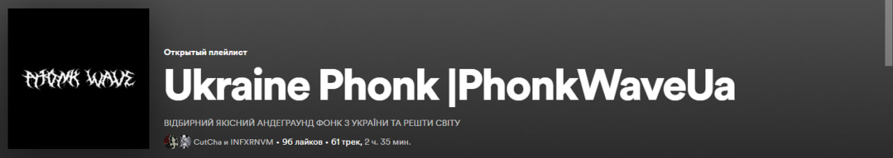

PhonkWaveUa - це молода українська організація створена поширювати український фонк та його виконавців.
На даний момент у ній знаходяться 14 музикантів.
Датою створення організації можна важати 8 травня, бо саме в цей день з'явилась її назва і плейліст на такій музичній платформі як Spotify.
На даний момент в організації нараховується 13 адміністраторів, які слідкують за Телеграм Каналом, та викладають пости.
З кожним днем наша організація росте та ми все більше і більше до своєї цілі. Зараз на Телеграм каналі більше 200 підписників.